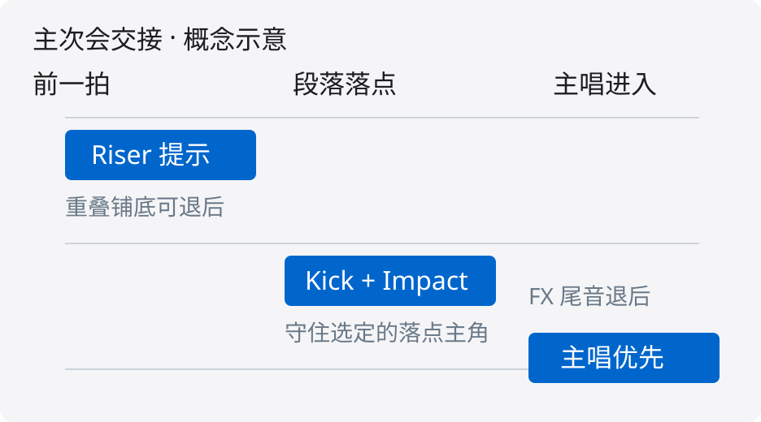

FX 可以是转场主角，但它没有永久优先权。判断顺序是：这一刻谁在讲重点、冲突发生在哪里、要让多久。不要因为轨名写着 FX，就把整组乐器压下去。
Impact（冲击音效）可以强调段落落点；Riser（上升音效）可以提示转场将到。它们承担叙事时，伴奏中的铺底、持续和弦或装饰层可以短暂后退。Atmosphere（氛围层）和持续噪声常常是背景，应服务人声与节奏。FX 在这里指编曲音效轨，不等于所有 Reverb / Delay 返回轨。

想象 120 BPM、4/4 的转场：段落开始前一拍，Riser 提醒即将变化；落点由 Kick 与短 Impact 共同建立；进入主唱第一句时，FX 尾音退后。主次会在一两拍内转换。先试缩短 FX 尾音、挪开触发点、删掉重叠铺底，再决定要不要动态处理。并非所有曲风都需要让 Kick 主导；这里的角色由编曲目标决定。
只有一次转场，用 Automation（自动化）画出确定的让位区间，往往比复杂侧链更直观。重复出现且强弱变化明显的 FX，可以用它触发重叠伴奏的 Ducking（压低避让）。如果只有某个频段冲突，考虑动态 EQ；如果冲突来自持续低频尾音，先编辑或处理 FX 自身。不要把所有问题都交给 Master 总线压缩。

把 Compressor 插在需要退后的 Pad 或乐器 Bus 上；把 FX 的一条发送接入 Compressor 的外部 Sidechain。FX 的主音频仍去正常混音输出，侧链只提供控制信号。人声和 Kick 如果是本段主角，不要顺手装进这个被压低的组。检测取样点是 Pre-Fader 还是 Post-Fader，要查 DAW；否则拉低 FX 推子可能同时改掉触发强度。先监听检测信号确认没有接反。

假设普通稳态向下压缩、Hard Knee、Auto Threshold 关闭，检测信号比 Threshold 高 4 dB，Ratio 为 2:1，那么阈值以上保留 2 dB，预期 GR 是 2 dB；输出对受控主音频施加约 −2 dB 的增益。计算为 GR = Δ × (1 − 1/R)。这是理想静态例子，不是插件实测：软拐点、Attack、Release、Range、程序依赖和补偿增益都会影响实际行为。实际调试先从轻微衰减试听，不能把固定 Threshold 或 Ratio 当成通用预设。

120 BPM 时，一拍（四分音符）是 500 ms，八分音符 250 ms，十六分音符 125 ms。它们可以作为画 Automation 的时间参照。示例：落点前 50 ms 开始从 0 dB 下行，落点达到 −2 dB，保持到 +125 ms，在 +250 ms 回到 0 dB。此曲线是作者设计的确定性增益包络，不是实际压缩器的 Release 模型。把 Release 设成 250 ms 不保证刚好在 +250 ms 完全恢复。应看 GR、听下一拍是否重新站住；尾音触发还在时，恢复也未必已经开始。

FabFilter Pro-C 3 官方宣传图可看到 THRESHOLD、RATIO、ATTACK、RELEASE、RANGE、SIDE CHAIN。图中输入为 Internal，预设名为 Nice Pumping：它仅用于识别真实软件，不代表本文外部 FX 侧链已经设置完成，更不是推荐参数。按官方手册切换到 External，并在宿主 DAW 中接好输入。Range 限制最大增益变化；Side chain EQ 改检测行为，不等于只削主音频的某个频段。
循环转场前后：低音量听 FX 是否交代变化、人声能否保持可懂、下一拍有没有泄气。再做电平接近的旁路对比，检查立体声和单声道；如果 FX 只靠更大声才成立，回头检查它的长度、音色与出场时机。短促抽吸不一定是错，但应是有意选择。停止条件是转场清楚、主角完整、伴奏恢复自然，而不是表头达到某个数字。
让位不是服从轨名，而是让听众在这一瞬间听见你要表达的重点。FX 可以获得局部、短时、受控的优先级；主唱、Kick 或其他主题元素也可以让 FX 退后。
本文没有提供音频工程、听音实验或电平记录。有关“更清楚”“更有冲击”的描述都是需要在实际素材中验证的工作目标。官方手册能够证明插件的检测路径、控件含义与时变行为，不能证明任何歌曲都应该让乐器给 FX 让位。把 FX 当成暂时的叙事中心，是本文的有条件制作建议。所有示意图均为原创，不模拟分析仪、不冒充 DAW 截图。
1. 选一个包含转场前一小节和后一小节的循环。先写下这一刻的主角：Riser、Impact、主唱、Kick 或其他元素。只选择真正重叠的伴奏作为受控目标。
2. 将 FX 降至合理平衡后，先调整长度和淡出。若这样已解决冲突，就停止加处理。一次性事件可直接画 Automation；明确控制的是轨道增益还是某插件参数，避免误改前级驱动量。
3. 如需要动态避让，把 Compressor 放在受控目标上，接入 FX 的 External Sidechain。监听检测支路确认正确。检查宿主的发送取样位置；Mute 或推子行为因 DAW 而异，不能默认静音后检测信号一定存在或消失。
4. 在素材中调 Threshold 和 Ratio，先追求较轻的 GR。若插件支持 Range，可限制最大增益变化；本文没有推荐固定阈值，因为侧链电平不同，同一阈值会得到不同衰减。Auto Gain 如使对比失真，先关闭或手动匹配输出。
5. 从想让出的时间窗反推 Attack、Hold 与 Release 的试听方向。较快起效可能保护 FX 前沿，也可能削弱伴奏瞬态；较长恢复可能保持空间，也可能让下一拍塌陷。不要把这些权衡说成绝对好坏。[S1–S3]
6. 只需要让中高频时，确认处理器是在主音频中改变那个频段，而不是仅对检测信号 EQ。Pro-Q 4 动态 EQ 的外部触发可作为一种实现，但每个频段仍需验证触发与范围。[S5]
7. 比较三版：仅编辑 FX、Automation、外部侧链。对齐监听电平，再判断哪版以最少副作用完成转场。没有必要同时叠加三种办法。
- FX 一来整首都瘪：先查受控组是否误含人声、Kick 或主旋律，再减小衰减范围，或缩小处理频带。不要只把 Ratio 调小而保留错误路由。
- 已经有 GR，仍听不清 FX：可能是音色/时机冲突而非总电平不足。先查 FX 自身长度和频谱，再听更小范围的编排改动。
- FX 尾音把伴奏压很久：检测还在被持续激励时，Release 不一定进入自由恢复。尝试缩短发送/检测事件、编辑尾音，或用确定性的 Automation；不要假定单纯缩短 Release 就必然解决。
- 每次避让强度不稳定：检查 Post-Fader 发送与 FX 推子自动化是否共同改变检测强度，也检查不同 FX 文件的电平和检测滤波。
- 出现不想要的抽吸或失真：减少衰减、放慢时间响应或改用平滑自动化，并在全曲中判断。极快响应可能追踪波形细节，不能仅凭图形平滑判断声音。
- Stereo 好、Mono 弱：检查 FX 的立体声构成与折叠，不把加宽当作避让的替代方法。本文不提供跨插件的 Width 百分比预设。
四分音符时长 T = 60000 / BPM，单位 ms；在 120 BPM 下 T = 500 ms。八分音符 T/2 = 250 ms，十六分音符 T/4 = 125 ms。这些是节拍网格，并不意味着所有压缩器采用相同恢复时间定义。
普通稳态硬拐点向下压缩的示例：检测电平高出阈值 Δ = 4 dB，压缩比 R = 2，则剩余阈值以上幅度为 Δ/R = 2 dB，增益衰减 GR = Δ − Δ/R = 2 dB。对于外部侧链，检测支路决定增益，增益乘到主音频；不能把受控 Pad 的输出电平误写成侧链检测的“阈值以上 2 dB”。
图中自动化从 −50 ms 到 0 ms 下降到 −2 dB，维持至 +125 ms，至 +250 ms 回到 0 dB；时间轴等比例、纵轴为增益 dB。这个包络是可照着画的教学构造，不是建议所有转场必须提前 50 ms。
真实对象为 FabFilter Pro-C 3 官方 press kit 截图，获取日期 2026-10-16，图片为 1680×1386。图上可见 Nice Pumping 和 Internal；没有修改控件、数值或状态。本报告只对相关界面作必要说明，截图不证明本文已完成宿主路由。插图版权归 FabFilter；本项目使用的依据是厂商官方媒体资料供给及与实质性产品评论相伴的有限教学展示，不宣称获得开放许可或独立再分发权。公开源码不得附 press ZIP、整套媒体资料或未使用的标志。另保留不含第三方截图的 publicsafe 版，供对分发权要求更严格的场景使用。[S6]
作者：Kangdi, Wang。Music Mixing Secrets，2026。
https://github.com/DDDPG/music-mixing-secrets
仓库引用用于本图文与可编辑源码，不能代替一手技术来源或厂商素材署名。
核验日期：2026-10-16。产品语境 Pro-C 3 / Pro-Q 4 / Live 12。
https://www.fabfilter.com/help/pro-c/using/sidechainsection
支持范围：External 接收外部检测信号；Side chain EQ 改变检测支路。
https://www.fabfilter.com/help/pro-c/using/timecontrols
支持范围：Attack、Release、Hold、Lookahead 的定义；恢复依程序和模式而变。
https://www.fabfilter.com/help/pro-c/using/dynamicscontrols
支持范围：Threshold、Ratio、Knee、Range 各自作用。
https://www.ableton.com/en/live-manual/12/automation-and-editing-envelopes/
支持范围：参数可以沿时间自动变化；本文数值曲线为原创教学例子。
https://www.fabfilter.com/help/pro-q/using/dynamic-eq
支持范围：动态 EQ 改变频段增益；可由外部侧链触发。
https://www.fabfilter.com/press
支持范围：官方提供 press kits，含高分辨率截图；未给出开放再分发许可。